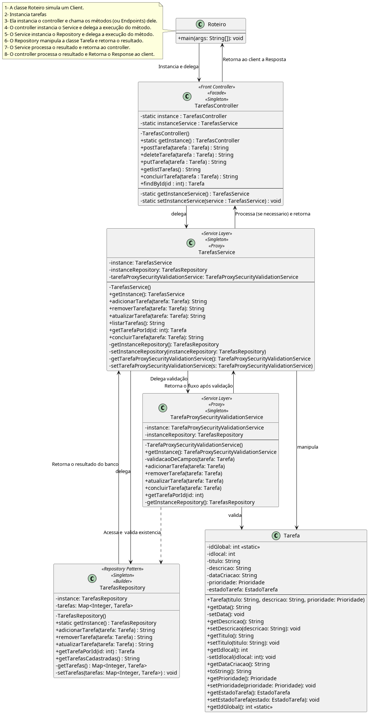

- Revisão da Documentação principal, Revisão de Código, Documentação dos Padrões, Documentação dos casos de teste, Documentação do Relatório De Testes
| Jabes Cajazeira || Data | Versão | Alteração | Autor / Revisor |
|---|---|---|---|
| 25/10/2024 | 01 | - Idealização do Exercício |
Jabes Cajazeira |
| 01/04/2025 | 02 | - Definição e Aplicação de Padrões de Arquitetura |
Jabes Cajazeira |
| 06/04/2025 | 03 | - Aplicação de Padrões De Projeto ás regras de Negócio |
Jabes Cajazeira |
| 18/04/2025 | 04 | - Construção inicial da Documentação do Sistema |
Jabes Cajazeira |
| 20/04/2025 | 05 | - Implementação do Padrão de Projeto: Proxy - de Proteção |
Jabes Cajazeira |
| 22/04/2025 | 06 |
- Adição da Camada de Testes, Elaboração, Ajustes e Execução dos Testes com Maven e o Junit como Dependência Principal
|
Jabes Cajazeira |
| 24/04/2025 | 07 | - Revisão da documentação, execução dos testes |
Jabes Cajazeira |
| 29/04/2025 | 08 | - Revisão da documentação, Revisão de Arquitetura |
Jabes Cajazeira |
| 01/05/2025 | 09 | - Revisão da Documentação / Arquitetura |
Jabes Cajazeira |
| 06/05/2025 | 10 |
- Revisão da Documentação principal, Revisão de Código, Documentação dos Padrões, Documentação dos casos de teste, Documentação do Relatório De Testes
|
Jabes Cajazeira |
O Sistema de Gerenciamento de Tarefas, partiu de um simples exercício de estudo dos artifícios e técnicas do Paradigma Orientado a Objetos, para uma ampliação a nível Sistema, contendo:
O Objetivo derivado dessa Idealização, é visualizar uma possível abstração de como na prática conceitos orientados a objetos são enxergados no backend das aplicações web, as quais estão implícitas nos frameworks desta natureza.
Para tal estudo, usaremos como referência, Spring Boot e Quarkus - Frameworks Web Modernos experimentados pelo autor,os quais são utilizados na construções de Aplicações, API's REST, assim como, demais propósitos inerentes as tecnologias, fornecendo serviços de: Criptografia, Autenticação, Conexão com banco de dados e técnicas, tecnologias, bibliotecas que se adequam as regras de negocio.
Podemos inferir com base nas funcionalidades descritas que, a modelagem em sua essência é um CRUD (Create, Read,
Update, Delete) básico, o qual esses frameworks,
implementam de forma atômica e verbosa técnicas que se integram e gerenciam recursos computacionais. Além as
funcionalidades descritas induzirem a modelagem imperativa dos padrões, e mesmo que, tais implementações podem ser
aplicáveis de forma mais enxuta (em Código Bruto), o objetivo é visualizar formas de aplica-los (quando
justificáveis) de modo a conferir: Robustez, Eficiência, Otimização de recursos, Maestria no domínio á essência do
Padrão orientado ao problema e aderência aos princípios SOLID - evidenciando principalmente o Principio da
Responsabilidade Única (SRP) em que cada classe possui apenas uma razão para existir . Nesse cenário, é requisito
do sistema, gerir tarefas a partir das seguintes funcionalidades:
| Diretório | Descrição |
|---|---|
src/main/java/controller |
Contem Controllers Responsáveis Centralizar as Requisições do Sistema |
src/main/java/data |
Contem Repository's Repensáveis pela Gerencia dos Dados |
src/main/java/model |
Contem Entidades que representam Abstrações de Objetos do Mundo Real |
src/main/java/service |
Contem Serviços com Regras de Negócio Aplicadas ao Cenário |
src/test/java |
Contem Testes Unitários realizados com os componentes do sistema |
A arquitetura do sistema segue o padrão Layered Architecture, que é uma extensão do MVC (Model-View-Controller).
[1]
[2]
O modelo contém todo o conteúdo e a lógica de processamento específicos à aplicação. A visão contém todas as
funções específicas à interface e possibilita a apresentação do conteúdo e lógica de processamento exigido pelo
usuário. O controlador gerencia o acesso ao modelo e à visão e coordena o uxo de dados entre eles.
Nesse contexto, o sistema foi dividido em 4 camadas principais, cada uma com responsabilidades bem definidas:
Controller (Front Controller Pattern):
[3]
O padrão de design do Front Controller visa fornecer um ponto de entrada centralizado para lidar com todas as
solicitações da Web recebidas. Esse padrão garante roteamento e gerenciamento de solicitações consistentes e
eficientes em uma aplicação web Java.
No projeto, o TarefasController.java atua como um Front Controller,
centralizando as operações e delegando a lógica de negócios para a camada de serviço.
Service (Service Layer Pattern):
Esta camada contém toda a lógica de negócios do sistema,[1:1] [...] fornecem serviços utilitários e funções de software de aplicação
[...]. É considerada a "alma" da regra de negócio, onde são descritas de forma imperativa todas as ações e
funcionalidades. No projeto, o TarefasService.java centraliza operações como adicionar,
atualizar, listar e concluir tarefas.
O uso do Service Layer desacopla a lógica de negócios da camada de controle, promovendo
reutilização e manutenibilidade.
Data (Repository Pattern):
Camada responsável pelo contato direto com os dados. Ela gerencia a persistência e recuperação de
informações, seja em memória, arquivos ou banco de dados. No projeto, isso é implícito pelo
TarefasRepository.java, que implementa o Repository Pattern.
[4] (Adaptado)
Esse padrão abstrai os detalhes de acesso aos dados, permitindo que o restante do sistema interaja com os dados de forma desacoplada.
Model:
Camada responsável pela gestão das entidades do sistema, sejam elas persistentes ou não. Além disso, o
Model pode encapsular as regras de validação e garantir a integridade dos dados. No projeto,
a classe Tarefa.java é um exemplo dessa camada, contendo validações como título e descrição
obrigatórios.
Além disso, cada camada (exceto a model) utiliza o artificio Generics adicionado no Java 5 que consiste em [5] (Adaptado) um tipo genérico de classe ou interface que é parametrizada sobre tipos. Utilizamos suportes angulares (<>) para especificar o parâmetro de tipo. [...]. Dessa forma, no sistema em questão os contratos explicito nas interfaces das respectivas camadas podem implementados em futuras classes, evidenciando Boas Práticas do Principio de Inversão de Dependência (DIP) - devido a pratica do uso de interfaces e Principio de Segregação de Interfaces (ISP), em que, nos temos uma segregação de interfaces, cada camada possui a sua em vez de uma contendo a abstração de todas. E por fim, o Principio Aberto Fechado (OCP) - nesse caso, as classes são abertas para extensão reutilizando ou não outros métodos para futuras implementações e fechado para modificações ao que ja possui.
A interação entre as camadas segue os princípios do MVC e do Layered Architecture:

Conforme as funcionalidades, a nível granular, podemos enxergar um CRUD Simples o qual a maioria dos frameworks como Quarkus, Spring Boot e demais, deixam de forma declarativa - ou seja, sem deixar transparente ao programador que tais passos podem ser executados. Sendo assim, de modo a abstrair de forma sucinta o funcionamento dos frameworks e aplica-los ao cenário, podemos visualizar os seguintes padrões de projeto.
Em suma, o sistema em questão implementa de forma incisiva os padrões citados, entretanto, a menção ao flyweight
no Client (Roteiro) é meramente simbólica, uma vez que, a simulação contempla parcialmente os seus princípios,
evidenciando a pratica de otimização de memoria ao compartilhar a String tipopessoal: "Pessoal" (na
representatividade de uma característica intrínseca que é comum a vários objetos) com as tarefas instanciadas,
mas, para ser considerada uma implementação mais eficaz, é preciso também estabelecer os participantes, assim
como, o corpo da técnica. Sendo assim, há justificativa para tanto, é possível que em futuras versões seja
acrescentada uma fundamentação adequada.
package controller;
import model.Prioridade;
import model.Tarefa;
public class Roteiro {
public static void main(String[] args) {
// Instancia o controlador de tarefas um front controller
// e singleton
TarefasController sistema = TarefasController.getInstance();
// Simulação de um Flyweight na criacao de tarefas
// com o mesmo tipo de tarefa
try {
String tipoPessoal = "Pessoal";
Tarefa tarefa1 = new Tarefa("Andar de Bike", tipoPessoal, Prioridade.URGENTE);
Tarefa tarefa2 = new Tarefa("Limpar a Casa", tipoPessoal, Prioridade.ALTA);
Tarefa tarefa3 = new Tarefa("Estudar Java", tipoPessoal, Prioridade.BAIXA);
Tarefa tarefa4 = new Tarefa("Fazer Análise de Dados em Mysql", tipoPessoal, Prioridade.MEDIA);
Tarefa tarefa5 = new Tarefa("", tipoPessoal, Prioridade.URGENTE);
// Requisiçao ao frontController do tipo POST
// para adicionar tarefas
System.out.println(sistema.postTarefa(tarefa1));
System.out.println(sistema.postTarefa(tarefa2));
System.out.println(sistema.postTarefa(tarefa3));
System.out.println(sistema.postTarefa(tarefa4));
System.out.println(sistema.postTarefa(tarefa5));
// Requisiçao ao frontController do tipo GET
System.out.println(sistema.getlistTarefas());
// Requisiçao ao frontController do tipo PUT
tarefa1.setDescricao("Geral");
System.out.println(sistema.putTarefa(tarefa1));
System.out.println(sistema.concluirTarefa(tarefa1));
// Requisiçao ao frontController do tipo delete
System.out.println(sistema.deleteTarefa(tarefa3));
// Requisiçao ao frontController do tipo GET
// para listar tarefas
System.out.println(sistema.getlistTarefas());
} catch (IllegalArgumentException e) {
System.out.println("Erro: " + e.getMessage());
}
}
}
git clone https://github.com/MrJabes762/Sistema-de-Gerenciamento-de-Tarefas.git
cd Sistema-de-Gerenciamento-de-Tarefas
mvn clean compile
Pode criar mum classe que interaja com a aplicação ou interagir pelo Client Roteiro
mvn test
A Abstração desenvolvida neste projeto contem os estudos arquiteturais e de padrões de projetos aplicados as regras de negócio das mais variadas aplicações web, RestAPIS, APIS e dentre outras modalidades.
Vale a pena ressaltar que, trata-se de uma visualização deste cenário, que corrobora maestria no domínio básico da essência destas aplicações.
Tais implementações podem ser aplicadas em complacência ao funcionamento dos frameworks, sendo úteis em caso de:
PRESSMAN, Roger S.; MAXIM, Bruce R. Engenharia de software: uma abordagem profissional [recurso eletrônico]. 9. ed. Porto Alegre: AMGH, 2021. E-pub. Tradução de Francisco Araújo da Costa. Revisão técnica de Reginaldo Arakaki, Julio Arakaki, Renato Manzan de Andrade. ISBN 978-65-5804-011-8. Editado também como livro impresso em 2021. ↩︎ ↩︎
GAMMA, Erich. et al. Padrões de projetos: Soluções reutilizáveis de software orientados a objetos Bookman editora, 2009. ↩︎
Java Design Patterns. (n.d.). Front Controller. Disponível em: https://java-design-patterns.com/patterns/front-controller/. Acessado em: 02 mai. 2025. ↩︎
BERGMAN, Per-Erik. Repository Design Pattern. Medium, 20 abr. 2017. Disponível em: https://medium.com/@pererikbergman/repository-design-pattern-e28c0f3e4a30. Acesso em: 29 abr. 2025. ↩︎
KUMAR, Pankaj. Java Generics Explained: Benefits, Examples, and Best Practice. DigitalOcean, 2022. Disponível em: https://www.digitalocean.com/community/tutorials/java-generics-example-method-class-interface. Acesso em: 29 abr. 2025. ↩︎